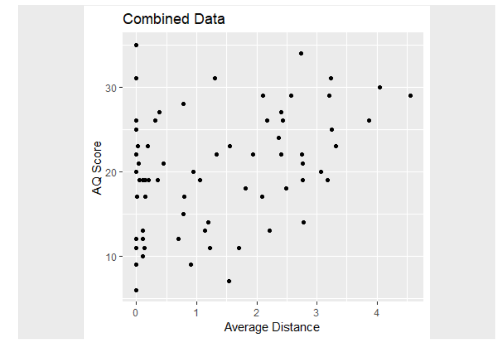

Last updated: 2023-09-25
Checks: 7 0
Knit directory: SCHEDULING/
This reproducible R Markdown analysis was created with workflowr (version 1.7.0). The Checks tab describes the reproducibility checks that were applied when the results were created. The Past versions tab lists the development history.
Great! Since the R Markdown file has been committed to the Git repository, you know the exact version of the code that produced these results.
Great job! The global environment was empty. Objects defined in the global environment can affect the analysis in your R Markdown file in unknown ways. For reproduciblity it’s best to always run the code in an empty environment.
The command set.seed(20221107) was run prior to running
the code in the R Markdown file. Setting a seed ensures that any results
that rely on randomness, e.g. subsampling or permutations, are
reproducible.
Great job! Recording the operating system, R version, and package versions is critical for reproducibility.
Nice! There were no cached chunks for this analysis, so you can be confident that you successfully produced the results during this run.
Great job! Using relative paths to the files within your workflowr project makes it easier to run your code on other machines.
Great! You are using Git for version control. Tracking code development and connecting the code version to the results is critical for reproducibility.
The results in this page were generated with repository version d39eed2. See the Past versions tab to see a history of the changes made to the R Markdown and HTML files.
Note that you need to be careful to ensure that all relevant files for
the analysis have been committed to Git prior to generating the results
(you can use wflow_publish or
wflow_git_commit). workflowr only checks the R Markdown
file, but you know if there are other scripts or data files that it
depends on. Below is the status of the Git repository when the results
were generated:
Ignored files:
Ignored: .Rhistory
Ignored: .Rproj.user/
Ignored: analysis/patch_selection.png
Ignored: analysis/patch_selection_8.png
Ignored: analysis/patch_selection_avg.png
Untracked files:
Untracked: admin/
Untracked: analysis/Notes.txt
Untracked: analysis/analysis_exp10_preemption.Rmd
Untracked: analysis/analysis_exp10_preemption1and2.Rmd
Untracked: analysis/analysis_exp10b_preemption-pareto.Rmd
Untracked: analysis/analysis_exp11_facesInNoise.Rmd
Untracked: analysis/analysis_exp11_facesInNoise_EW.Rmd
Untracked: analysis/analysis_exp11_facesInNoise_EW_v2.Rmd
Untracked: analysis/analysis_exp9_preselection.Rmd
Untracked: analysis/analysis_exp9_preselection1and2.Rmd
Untracked: analysis/analysis_exp9_select-then-complete.Rmd
Untracked: analysis/anovaData/
Untracked: analysis/archive/
Untracked: analysis/correlation_test.m
Untracked: analysis/fd_pl.rds
Untracked: analysis/fu_pl.rds
Untracked: analysis/instructions_for_honours_students.txt
Untracked: analysis/joyPlot.m
Untracked: analysis/joyPlot.zip
Untracked: analysis/joyPlot/
Untracked: analysis/loadData.m
Untracked: analysis/mstrfind.m
Untracked: analysis/plotDistanceByTrials.m
Untracked: analysis/prereg/
Untracked: analysis/prereg_v4_preplanning.Rmd
Untracked: analysis/prereg_v5_facesInNoise.Rmd
Untracked: analysis/prereg_v5_preemption.Rmd
Untracked: analysis/prereg_v5_preplanning.Rmd
Untracked: analysis/reward rate analysis.docx
Untracked: analysis/rewardRate.jpg
Untracked: analysis/temp/
Untracked: analysis/toAnalyse/
Untracked: analysis/wflow_code_string.txt
Untracked: archive/
Untracked: code/AUTSIMQ/
Untracked: code/FACESINNOISE/
Untracked: code/Notes on how the scheduling jsPsych code works.txt
Untracked: code/PREEMPT/
Untracked: code/PREPLAN/
Untracked: code/SCHEDULEPIX/
Untracked: code/SCHEDULEPIX_UON/
Untracked: code/SCHEDULERDK/
Untracked: code/SCHEDULERDK_UON/
Untracked: code/SCHEDULE_REWARD/
Untracked: code/SCHEDULE_TYPING/
Untracked: data/2023-exp10-preemption-pareto.csv
Untracked: data/2023-exp10-preemption-selections.csv
Untracked: data/2023-exp10-preemption.csv
Untracked: data/2023-exp11-facesInNoise-unlabelledCondition.csv
Untracked: data/2023-exp11-facesInNoise.csv
Untracked: data/2023-exp9-preplan.csv
Untracked: data/2023-exp9-select-then-complete.csv
Untracked: data/2023_AQdata.csv
Untracked: data/OLIFEscoring.csv
Untracked: data/OLIFEscoring_v0.csv
Untracked: data/SQL query.txt
Untracked: data/archive/
Untracked: data/create_database.sql
Untracked: data/dataToAnalyse/
Untracked: data/data_dictionary_facesInNoise.csv
Untracked: data/data_dictionary_preemption.csv
Untracked: data/data_dictionary_preplan.csv
Untracked: data/data_dictionary_select_then_complete.csv
Untracked: data/exp1_rdk_data_selections.csv
Untracked: data/exp2_rdk_data_selections.csv
Untracked: data/exp3a_rdk_data_dynamic_selections.csv
Untracked: data/exp3b_rdk_data_dynamic_highlight_selections.csv
Untracked: data/exp6a_typing_exponential.xlsx
Untracked: data/exp6b_typing_linear.xlsx
Untracked: data/exp8a_typing_no_reward_data_selections.csv
Untracked: data/rawdata_incEmails/
Untracked: data/sona data/
Untracked: data/summaryFiles/
Untracked: manuscript/
Untracked: models/
Untracked: presentations/
Untracked: references/
Untracked: spatial_pdist.Rdata
Untracked: temp_selections.csv
Unstaged changes:
Modified: analysis/analysis_exp1_labelled_nodelay.Rmd
Modified: analysis/analysis_exp2a_labelled_delay.Rmd
Modified: analysis/analysis_exp3a_rdk_dynamic_delay.Rmd
Modified: analysis/analysis_exp3b_rdk_dynamic_delay_highlight.Rmd
Modified: analysis/analysis_exp7e_rdk_reward_points.Rmd
Modified: analysis/analysis_exp8a_typing_no_reward.Rmd
Modified: data/README.md
Note that any generated files, e.g. HTML, png, CSS, etc., are not included in this status report because it is ok for generated content to have uncommitted changes.
These are the previous versions of the repository in which changes were
made to the R Markdown
(analysis/prereg_v6_AQcorrelation.Rmd) and HTML
(docs/prereg_v6_AQcorrelation.html) files. If you’ve
configured a remote Git repository (see ?wflow_git_remote),
click on the hyperlinks in the table below to view the files as they
were in that past version.
| File | Version | Author | Date | Message |
|---|---|---|---|---|
| Rmd | d39eed2 | knowlabUnimelb | 2023-09-25 | Preregister confirmatory correlation analysis |
Testing the correlation between Optimal Scheduling and Autism Spectrum Questionairre Score
In a prior pre-registered study (https://osf.io/p2e9y), we conducted an exploratory analysis of the relationship between scheduling optimality and Autism Spectrum Disorder as measured by the Autism Spectrum Quotient (AQ; Baron-Cohen et al., 2001). Surprisingly, we found a significant positive correlation between the distance from the optimal schedule and the AQ score in a sample of N = 70; r = .37, p = .0013.
The purpose of this document is to pre-register a larger replication effort in attempt to validate that result. The primary task will follow our previous studies (https://knowlabunimelb.github.io/SCHEDULING/index.html), which used a procedure in which participants were presented with four Random Dot Motion tasks of varying difficulty (labelled on screen). Participants select the task they want to complete and then they complete that task before returning to the selection. Participants complete a number of trials under both a long and short deadline (10 and 30 trials, respectively) which are used to derive an average distance score. This score counts the number of swaps between the optimal schedule and a participant’s selected schedule on each trial and then averages the results across trials. With four tasks this score ranges from 0 (optimal) to 6 (non-optimal).
Under instructions to complete as many tasks as possible before the deadline, the optimal scheduling policy is to complete the tasks from easiest to hardest. After completion o 1 practice trial, 10 long deadline, and 30 short deadline trials (in that order), participants will complete the AQ survey.

If the relation between scheduling and AQ score is real (i.e., reflects something other than noise), then we expect to find a significant positive correlation between those variables.
In this experiment, participants will complete multiple trials for selecting and completing typing tasks. On each trial, participants will be shown a set of four tasks labelled Easy, Medium, Hard, and Very Hard. The labels correspond to the coherence of the RDK.
Before completing the deadline task, participants will complete a trial with no deadline. This will help participants learn the task and explore strategies. Participants will then complete 10 trials with a long deadline followed by 30 trials with a short deadline.
N/A
Difficulty location will be randomized across subjects. Four coherence levels will be used to manipulate difficulty (proportions of 0.8, 0.5, 0.1, and 0.01). The short deadline will be 6 seconds; this has previously been shown to be sufficient to allow an average of 75% of the subtasks to be completed.
Location of tasks (i.e., RDK coherence) will be randomized across participants on each trial.
Only CI Little has access to the data, which is stored in a password secured database. CI Little has inspected the raw data to ensure that it has been recorded properly. No summary analysis of the data has been undertaken.
Participants will be recruited from the University of Melbourne’s Research Experience Program. Participants will be reimbursed 1 credit for participation.
Due to a shortage of studies in the Research Experience Program, we are permitted to test an unbounded number of participants between now and 10 Nov 2023. The study will run in this period with an aim of collecting as many participants as possible in this time.
According to the calculator here: http://sample-size.net/correlation-sample-size/, to achieve at 80% power given an expected population rho of 0.38, the minimum sample size is 52 participants. The 95% CI’s on our pilot correlation are 0.15 to 0.56. If we assume the lower value, then according , we would need approximately 347 participants to detect this correlation with 80% power. In the sampling period, we aim to sample at least 350 participants.
Sampling will be stopped at the end of the collection period. If 350 participants have not been collected, we will collect additional participants in the next run of the Research Experience Program in 2024.
We will manipulate the coherence and direction of four RDK tasks and the deadline available for selection and completion of the four tasks on each trial.
The main variable is the order in which subtasks are completed. Secondary variables are the accuracy and completion time of the subtasks.
N/A
We will first conduct a number of manipulation checks in order to determine: a) if the deadline was effective and b) if the coherence manipulation was effective. We will compare the number of tasks completed between the long and short deadline phases using a t-test. we will compare the accuracy and response time across each level of coherence in the short and long deadline phases using a 4 Difficulty x 2 Deadline ANOVA. Linear contrast analyses will also be conducted.
For each participant, the optimal order of each location will be determined (i.e., from easiest to hardest). We will compute the marginal response orders for each tasks (i.e., the probability of selection the easy, medium, hard, and very hard subtasks in the 1st, 2nd, 3rd, and 4th positions). Marginal response probabilities will be compared to uniform responding using a chi^2 test. We also use chi^2 tests of independence to compare each condition’s marginal response probabilities to each other.
The marginal response analyses provide information about the order in each subtask was selected; however, the marginal distributions do not reveal anything about whether there were sequences of selections (e.g., was the medium task chosen after the easy task?) or how optimal those sequences were. To assess this, we examined the distance of each selected sequence from the optimal order (i.e., easy to very hard). To account for incomplete selections (due to timeouts), we will compute the distance between all of the hypothetical sequences that could have resulted and then averaged the distances across these sequences. Distance was computed as the number of swaps necessary to transform the selected sequence to the optimal sequence and varied from 0 (optimal) to 6.
We will examine the distribution of distances across participants to determine how much they deviate from optimal. Distributions will be compared between conditions using ks-tests.
The average distance will be correlated with the AQ score as described above.
If an error is made when completing an RDK, the experiment will pause for a 500 msec time penalty, the direction will be randomly resampled, and participants will have to complete that RDK again. Response time to complete an RDK will be computed as the total cumulative time until a correct response is made.
For pedagogical reasons, we will use both Null Hypothesis Significance Testing and, where relevant, posterior parameter estimation and Bayes Factors.
Only complete data files will be analysed. It is possible participants may complete the experiment more than once; data files are timestamped so only the first complete dataset for each participant will be analysed. Participants will be excluded if their accuracy on the easiest RDK is less than chance.
Participants will be excluded if they do not complete all trials.
N/A
N/A
sessionInfo()R version 4.1.3 (2022-03-10)
Platform: x86_64-w64-mingw32/x64 (64-bit)
Running under: Windows 10 x64 (build 19044)
Matrix products: default
locale:
[1] LC_COLLATE=English_Australia.1252 LC_CTYPE=English_Australia.1252
[3] LC_MONETARY=English_Australia.1252 LC_NUMERIC=C
[5] LC_TIME=English_Australia.1252
attached base packages:
[1] grid stats graphics grDevices utils datasets methods
[8] base
other attached packages:
[1] ggplot2_3.3.5 png_0.1-7 workflowr_1.7.0
loaded via a namespace (and not attached):
[1] tidyselect_1.1.2 xfun_0.30 bslib_0.3.1 purrr_0.3.4
[5] colorspace_2.0-3 vctrs_0.4.1 generics_0.1.2 htmltools_0.5.2
[9] yaml_2.3.5 utf8_1.2.2 rlang_1.0.2 jquerylib_0.1.4
[13] later_1.3.0 pillar_1.7.0 withr_2.5.0 glue_1.6.2
[17] DBI_1.1.2 lifecycle_1.0.1 stringr_1.4.0 munsell_0.5.0
[21] gtable_0.3.0 evaluate_0.15 knitr_1.38 callr_3.7.0
[25] fastmap_1.1.0 httpuv_1.6.5 ps_1.6.0 fansi_1.0.3
[29] highr_0.9 Rcpp_1.0.8.3 promises_1.2.0.1 scales_1.2.0
[33] jsonlite_1.8.0 fs_1.5.2 digest_0.6.29 stringi_1.7.6
[37] processx_3.5.3 dplyr_1.0.8 getPass_0.2-2 rprojroot_2.0.3
[41] cli_3.2.0 tools_4.1.3 magrittr_2.0.3 sass_0.4.1
[45] tibble_3.1.6 crayon_1.5.1 whisker_0.4 pkgconfig_2.0.3
[49] ellipsis_0.3.2 assertthat_0.2.1 rmarkdown_2.13 httr_1.4.2
[53] rstudioapi_0.13 R6_2.5.1 git2r_0.30.1 compiler_4.1.3